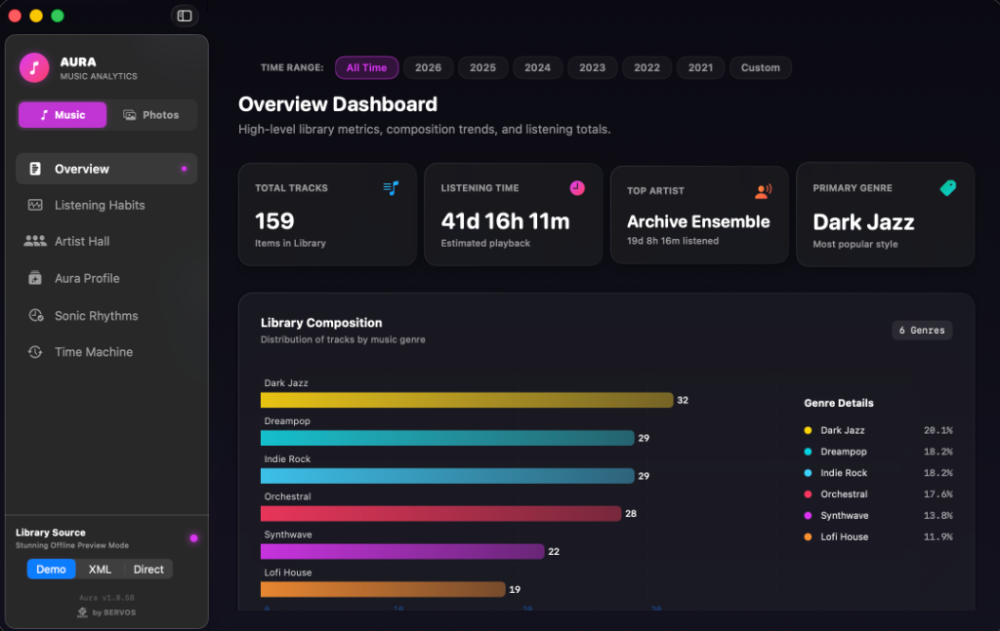
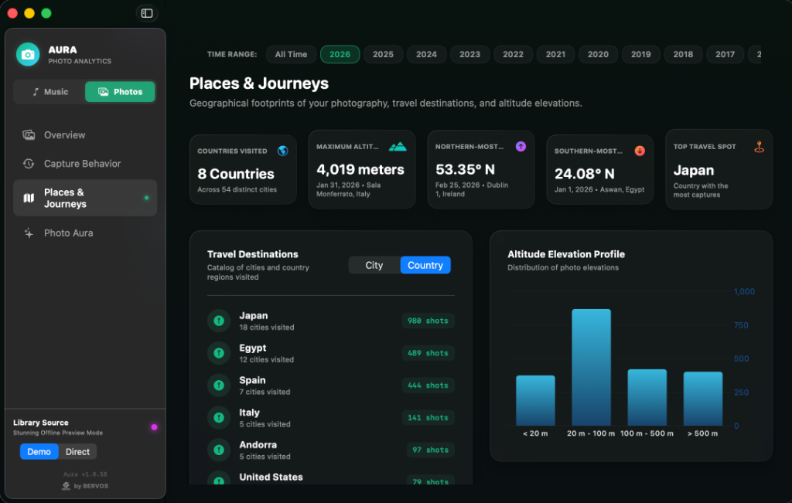

100% Private & Local
Your personal analytics should be yours alone. Aura runs entirely offline, parsing your library databases locally inside macOS secure sandbox structures. Zero servers, zero uploads.
Aura is a gorgeous local dashboard that turns your macOS Music and Apple Photos libraries into private, interactive insights. Spot discovery trends, map your travels, and rediscover old favorites.
Explore your listening history and rediscover tracks hidden in your Apple Music library. Aura reads your library XML directly with secure offline parsing.
Explore your photography patterns, visited destinations, and camera statistics securely. Integrates natively with macOS PhotoKit in milliseconds.


Your personal analytics should be yours alone. Aura runs entirely offline, parsing your library databases locally inside macOS secure sandbox structures. Zero servers, zero uploads.
Written in pure SwiftUI without third-party frameworks. Queries thousands of photos asynchronously in under 50ms using Apple PhotoKit and parses Music XML standard plists in milliseconds.
No hidden subscriptions, no ads, and no paywalls. The Swift source code is fully open on GitHub, enabling complete security audatibility and community transparency.